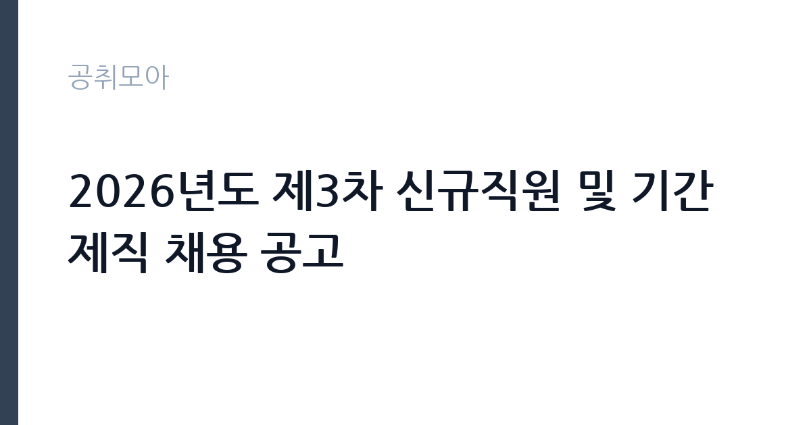

[공공기관] 2026년도 제3차 신규직원 및 기간제직 채용 공고
한국환경산업기술원 · 서울 · 마감 2026-11-02 (D-14) · 출처 잡알리오

한눈에 보는 모집 조건
| 기관 | 한국환경산업기술원 |
|---|---|
| 공고명 | 2026년도 제3차 신규직원 및 기간제직 채용 공고 |
| 고용형태 | 기간제 |
| 근무지 | 서울 |
| 게시일 | 2026-10-19 |
| 마감일 | 2026-11-02 (D-14) |
지원자격, 이렇게 읽으세요
- 공공기관 채용공시
- 세부 조건은 원문 공고문 확인
이 공고의 핵심은 트랙 구분입니다. 첫째, 공무직(전문직)은 관련 학과 박사 이상 학위 취득자를 대상으로 합니다. 둘째, 기간제(행정)는 세 갈래로 지원할 수 있습니다. 학사 이상 학위 취득자 또는 국가기술자격법상 기사 취득자, 전문학사 이상 취득 후 관련 분야 2년 이상 경력자, 고등학교 졸업 후 관련 분야 4년 이상 경력자입니다. 셋째, 기간제직(지원·미화)은 고등학교 졸업자 또는 이와 동등 이상의 자격을 가진 사람입니다. 즉 같은 공고 안에서 박사급 연구직과 고졸 지원직이 함께 모집됩니다. 본인이 어느 트랙에 해당하는지 확정하지 않으면 서류에서 바로 탈락합니다. 채용분야별 세부 응시자격은 첨부 공고문에 있으니 원문을 반드시 확인하십시오.
이 공고의 포인트
이 공고의 포인트는 진입 경로가 다양하다는 점입니다. 박사급 전문직부터 고졸 지원직까지 한 공고에서 함께 뽑기 때문에, 학력이 낮아도 지원할 수 있는 문이 열려 있습니다. 두 번째는 기관의 성격입니다. 한국환경산업기술원은 환경기술 개발과 환경산업 육성을 담당하는 환경부 산하 기관으로, 환경 정책과 산업 지원의 접점에 있습니다. 세 번째는 고용 형태의 차이입니다. 공무직은 무기계약 성격이고, 기간제는 계약 기간이 정해져 있습니다. 같은 공고라도 신분과 처우가 다르므로, 지원 전에 어느 트랙이 본인 목표에 맞는지 판단해야 합니다.
전형은 어떻게 진행되나
전형은 서류전형과 면접전형을 기본으로 하며, 트랙에 따라 필기나 직무수행능력 평가가 추가될 수 있습니다. 서류에서는 학력과 경력이 채용분야와 직접 연결되는지를 봅니다. 기간제(행정)의 경력 요건은 증명서로 입증되어야 하므로, 경력기술서에 근무 기간과 담당 업무를 정확히 적으십시오. 지원·미화 트랙은 서류 요건이 단순한 대신 근무 태도와 현장 적응력을 중점적으로 봅니다. 최종합격 후에는 신원조회와 채용 신체검사가 이어집니다. 접수는 기관 채용 사이트에서 온라인으로 진행되며, 마감일에는 접속이 몰리므로 하루 전 제출을 권합니다.
원문에서 확인한 전형 방식
○ 공무직(전문직) (※ 채용분야별 세부 응시자격 기준은 첨부파일 채용 공고 참조) - 관련 학과 박사 이상 학위 취득자 등 ○ 기간제(행정) (※ 채용분야별 세부 응시자격 기준은 첨부파일 채용 공고 참조) - 학사 이상 학위 취득자 또는 국가기술자격법 시행규직에 따른 국가기술자격기사 취득자 - 전문학사 이상 학위 취득 후 관련분야 2년 이상 경력을 가진 자 - 고등학교 졸업 후 관련분야 4년 이상 경력을 가진 자 ○ 기간제직(지원, 미화) - 고등학교를 졸업한 자 또는 이와 동등 이상의 자격을 가진 자
이런 분께 추천해요
- 환경 분야 박사 학위를 가진 분 — 공무직 전문직 트랙이 열려 있습니다
- 전문학사 이상으로 관련 분야 경력 2년 이상인 분 — 기간제 행정 트랙 지원이 가능합니다
- 학력과 무관하게 공공기관 지원·미화 업무를 시작하고 싶은 분
지원 전 체크리스트
- 세 트랙 중 본인이 해당하는 곳을 확정했는가 — 트랙별 요건이 완전히 다릅니다
- 경력 요건으로 지원한다면 경력증명서로 입증이 가능한가
- 첨부 공고문에서 채용분야별 세부 자격을 대조했는가
- 마감일 2026-11-02 이전에 온라인 접수를 완료했는가
모집 일정과 제출 타이밍
마감은 2026년 11월 2일입니다. 3차 채용인 만큼 1·2차에서 채워지지 않은 분야가 포함돼 있을 수 있어, 채용분야별 인원을 먼저 확인하는 것이 좋습니다. 권장 일정은 첫 주에 트랙을 확정하고 지원서를 작성하는 것입니다. 둘째 주에는 경력증명서와 자격증 사본을 준비하고, 마감 사흘 전에 제출하십시오. 환경 분야는 채용 시기가 하반기에 몰리므로, 유사 기관 공고와 일정이 겹치지 않는지도 확인해 두면 좋습니다.
직무 이해하기: 공공기관
한국환경산업기술원은 환경기술 개발 지원과 환경산업 육성을 담당하는 환경부 산하 기관입니다. 주요 사업은 환경기술 연구개발 지원, 환경산업 수출 지원, 환경정보 제공, 친환경 인증 운영 등입니다. 공무직 전문직은 연구개발 과제 기획과 평가, 기술 동향 분석, 사업 성과 관리 등을 맡습니다. 기간제 행정은 사업 운영 지원, 예산 집행과 정산, 협약 관리, 민원 응대 등 행정 실무를 담당합니다. 지원·미화 트랙은 청사 시설 관리와 방문객 안내, 사무 지원 업무를 수행합니다. 같은 기관이라도 트랙에 따라 업무 성격이 크게 다르므로, 본인이 지원할 트랙의 직무기술서를 먼저 읽어보십시오.
자기소개서 작성 팁
이 공고는 트랙별로 자기소개서 전략이 달라야 합니다. 전문직은 연구 성과와 정책 기여를 중심으로 쓰십시오. 수행 과제, 논문, 정책 반영 실적을 구체적으로 제시하면 됩니다. 기간제 행정은 사업 운영 실무를 강조하십시오. 예산 집행, 협약 관리, 이해관계자 응대 경험을 숫자와 함께 적는 것이 좋습니다. 지원·미화 트랙은 성실성과 근무 지속성을 보여주는 것이 핵심입니다. 어느 트랙이든 첫 문단에 지원 분야와 본인의 적합성을 한 문장으로 제시하고, 마무리에는 입사 후 맡을 업무를 구체적으로 적으십시오. 다른 트랙의 경험을 억지로 끌어오면 오히려 직무 이해가 부족해 보입니다.
면접 준비 포인트
면접은 트랙별로 성격이 다릅니다. 전문직은 연구 발표와 질의응답이 붙을 수 있고, 행정직은 사업 운영 상황을 가정한 질문이 나옵니다. 지원·미화 트랙은 근무 태도와 안전 의식이 중심입니다. 공통적으로는 환경 분야에 대한 기본 이해를 확인합니다. 탄소중립, 환경기술 사업화, 녹색산업 같은 키워드를 자신의 업무와 연결해 말할 수 있으면 좋습니다. 답변은 결론부터 하고 길게 늘어놓지 마십시오. 기관의 주요 사업을 한두 개 알고 가는 것만으로도 대화의 질이 달라집니다.
급여·근무조건 읽는 법
보수는 기관의 직종별 보수 규정에 따라 정해지며, 원문 공고문의 처우 항목에서 확인해야 합니다. 이번 공고에서는 연봉 수치가 공개되지 않았으므로 구체적인 금액은 원문을 기준으로 하십시오. 공무직은 무기계약 성격으로 정년까지 근무가 가능하고, 기간제는 계약 기간이 정해져 있습니다. 공공기관 경영공시인 알리오에서 기관의 평균 보수와 보수 규정을 확인할 수 있으니, 지원 전에 한 번 확인해 보시길 권합니다. 기간제의 경우 월 단위 보수에 수당이 붙는 구조가 일반적이고, 계약 만료 시 퇴직급여가 발생합니다. 실수령액은 세금과 보험료를 뺀 값이므로 표기 금액과 차이가 있습니다.
자주 묻는 질문
- 고졸도 지원할 수 있나요?
기간제직(지원·미화) 트랙은 고등학교 졸업자 또는 동등 이상 자격을 가진 사람을 대상으로 합니다. 트랙별 세부 요건은 원문 공고문을 확인하십시오. - 공무직과 기간제는 어떻게 다른가요?
공무직은 기간의 정함이 없는 무기계약 성격이고, 기간제는 계약 기간이 정해져 있습니다. 신분과 처우가 다르므로 지원 전에 확인이 필요합니다. - 몇 차 채용인가요?
2026년도 제3차 채용입니다. 차수가 진행될수록 미충원 분야가 포함될 수 있으니 채용분야별 인원을 확인하십시오.
함께 보면 좋은 공고
[공공기관] 2026년 하반기 중소벤처기업진흥공단 체험형 청년인턴(일반) 채용 공고 — 마감 2026-11-03[공공기관] 2026년 제3차 동남권원자력의학원 직원채용 공고 — 마감 2026-11-02[공공기관] 2026년 한국잡월드 정규직 신입(5급) 직원 채용 공고 — 마감 2026-11-04출처: 잡알리오 공개정보를 바탕으로 공취모아가 정리한 안내글입니다. 모집 조건·일정은 변경될 수 있으니 지원 전 반드시 원문 공고문을 확인하세요. 본 글은 정보 제공용이며 합격을 보장하지 않습니다.